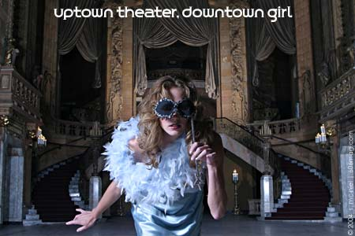

 |
|||||||||
| The Uptown Theatre, 4816 N. Broadway, Chicago , which opened in 1925 and has been closed since 1981, is, perhaps, the most photographed and documented cinema building of our time. Its tremendous success of serving an estimated 65 million patrons and its long tenure as an endangered historic landmark have earned it international acclaim and concern.
It boasts a peculiar kind of fame -- having been twice-named endangered by the Landmarks Preservation Council of Illinois -- for a building built for the express purpose of tremendous commercial enterprise. The Uptown was themed entertainment of its day. It is also a strange thing, no doubt, for those who live near and do maintenance and promotion for what is said to be the largest, surviving freestanding theater building in the United States , particularly because this over-scaled venue is closed, mysterious and strictly off-limits. (by Andy Pierce) Thanks to Andy Pierce and Friends of the Uptown |